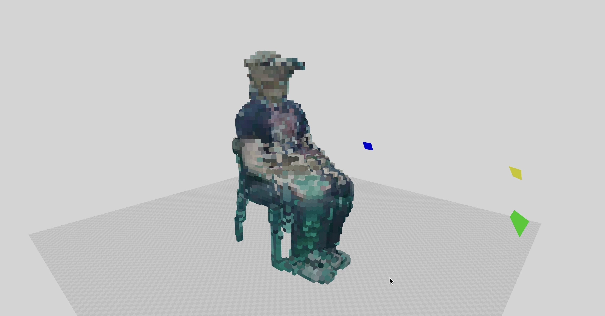
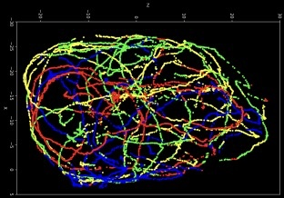

<!DOCTYPE html>
<html>
    <head>
        <title>Computer Vision</title>
        <link href="proj.css" rel="stylesheet">
        <script src="https://unpkg.com/react@16.7.0/umd/react.development.js"></script>
        <script src="https://unpkg.com/react-dom@16.7.0/umd/react-dom.development.js"></script>
        <script src="https://unpkg.com/@babel/standalone/babel.min.js"></script>

    </head>
    <body>
        <div id="root"></div>
        <script type="text/babel">
        
            ReactDOM.render(
                <div>
                    <div class="topNavBar">
                    </div>
                    <div>
                        <ul>
                            <li><a class="navBarItem" href="index.html"></img></a></li>
                            <li><a class="navBarItem" href="Projects.html">School projects</a></li>
                            <li><a class="navBarItem" href="OtherProjects.html">Other projects</a></li>
                        </ul>
                    </div>
                    <h1>Computer Vision</h1>
                    <div class="content">
                        <div>
                            <div class="projInfo">
                                <div class="row">
                                    <h2>About</h2>
                                    <p>
                                        <strong>Year: </strong>2023<br />
                                        <strong>Made with: </strong> OpenCV; Python<br />
                                        <br />This assignment was done together with one classmate. It consists of 3 steps. The first step is to do camera callibration
                                        <br />to be able to project points in 3D space. This was done with camera intrinsic and extrinsic matrices. The second step was 
                                        <br />to create a 3D voxel representation, based on four images, taken from different angles. This is done by applying background
                                        <br />subtraction to the images and 'carving' out the shape from a block of voxels. The third step was to create voxel models of
                                        <br /> moving targets (a video) and to trace the path taken by the people walking in the video. This was done using Gaussian
                                        <br /> Mixture Models and k-means clustering.
                                        <br />
                                    </p>
                                    <iframe width="560" height="315" src="https://www.youtube.com/embed/NRsRUhXpPS4?si=sIUQmCj16GZqLIJe" title="YouTube video player" frameborder="0" allow="accelerometer; autoplay; clipboard-write; encrypted-media; gyroscope; picture-in-picture; web-share" allowfullscreen></iframe>
                                    <iframe width="560" height="315" src="https://www.youtube.com/embed/RdLjnp3Jwfs?si=MG9O0L-VLRgV8QrI" title="YouTube video player" frameborder="0" allow="accelerometer; autoplay; clipboard-write; encrypted-media; gyroscope; picture-in-picture; web-share" allowfullscreen></iframe>
                                    <iframe width="560" height="315" src="https://www.youtube.com/embed/AmRPcpt-CCg?si=jNoiiOq5sQMj5Yfm" title="YouTube video player" frameborder="0" allow="accelerometer; autoplay; clipboard-write; encrypted-media; gyroscope; picture-in-picture; web-share" allowfullscreen></iframe>
                                    </div>
                            </div>
                        </div>
                        <div class="row">
                            <h2>Gallery</h2>
                            <div class="column"></img></div>
                            <div class="column"></img></div>
                            <div class="column"></img></div>
                        </div>
                    </div>
                </div>,
                document.getElementById("root")
            );
        </script>
    </body>
</html>